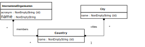

This project is based on the information design model shown below.
The corresponding app from the previous assignments is to be extended by
adding the possibility to manage data about international organizations, with countries as
members, and about cities, as capitals and headquarter
locations. This is achieved by adding corresponding model
classes InternationalOrganization and City, and
the following unidirectional associations:
a many-to-many association between
InternationalOrganization and Country
assigning zero or more countries as the
members
of an international organization, and, inversely, zero
or more international organizations to a country,
a one-to-many association between Country and
City assigning zero or many cities to a country and,
inversely, exactly one country to a city.
|  |
You can use the following sample data for testing your app:
| International organizations | ||
|---|---|---|
| Acronym | Name | Members |
| UN | United Nations | Germany, France, Russia |
| WHO | World Health Organization | Germany, France, Russia |
| NATO | North Atlantic Treaty Organization | Germany, France |
| Countries | ||
|---|---|---|
| Name | Cities | International organizations |
| Germany | Berlin, Hamburg, Frankfurt | UN, WHO, NATO |
| France | Marseille, Lyon, Paris | UN, WHO, NATO |
| Russia | Moscow, Novosibirsk | UN, WHO |
| Cities | |
|---|---|
| Name | Country |
| Berlin | Germany |
| Frankfurt | Germany |
| Hamburg | Germany |
| Lyon | France |
| Marseille | France |
| Moscow | Russia |
| Novosibirsk | Russia |
| Paris | France |
More data about countries can be found at the CIA World Factbook website.